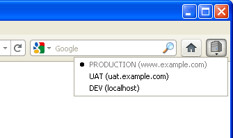
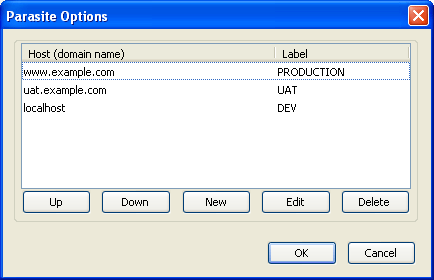

Parasite is a simple Firefox Web development extension that enables switching the same page between hosting environments. In other words, open the same file path on a different domain name. Useful when working on a Web project that has multiple hosts/staging servers.
For example:
Browse your live website: http://www.your-website.com/about/my-page.html
Select another environment from the host list, e.g. 'LOCAL'
Firefox then opens the same page on the selected host: http://localhost/about/my-page.html
Features:
Hold CTRL to open in a new tab.
Hold SHIFT to open in a new window.
Label and re-order hosts as required.
Query string parameters and hashes supported.
Add as many hosts as you like in the options. Currently only supports one project (multiple projects available in future version).
Many more features to come!
Click the Parasite toolbar button to show a list of hosts for your projectAdd as many hosts as you need in the options